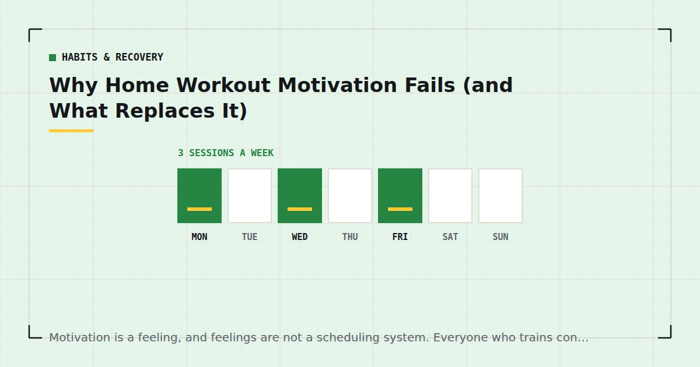

Habits & Recovery
Why Home Workout Motivation Fails (and What Replaces It)
Motivation is a feeling, and feelings are not a scheduling system. Everyone who trains consistently has quietly stopped relying on it, usually without noticing.

Every fitness article eventually tells you to find your why, and it is not useless advice — it is just aimed at the wrong problem. People who train consistently do not have more motivation than people who do not. They have arranged things so that less motivation is required.
The problem with motivation
Three structural issues make it a poor foundation.
It is highest when it matters least. Motivation peaks in January, on Sunday evening, and immediately after buying equipment. It is lowest on a Wednesday in November after a bad day — which is exactly the session that determines whether you have a routine.
This is also why the January pattern is so reliable: high motivation produces an ambitious plan, and the plan is then executed by a less motivated person the following month.
It cannot be summoned. You cannot decide to feel motivated any more than you can decide to feel hungry. Advice to be more motivated is advice to have a different feeling, which is not actionable.
Waiting for it teaches you to wait for it. Every time you train only when motivated, you strengthen the association between the feeling and the behaviour. Then the absence of the feeling becomes a reason not to train.
What replaces it
Four things, in order of how much they do.
1. Cues. A behaviour attached to something that already happens reliably does not require a decision. This is the single highest-leverage change and the mechanism is set out in habit stacking for exercise.
2. Reduced friction. Every step between deciding and starting is a place the decision reverses. Covered below.
3. Pre-made decisions. A written plan removes the question of what to do. A defined minimum session removes the question of whether a short version counts. Both decisions are made better in advance than while tired.
4. Time. Automaticity develops with repetition in a consistent context, and the research suggests a median of around 66 days to plateau, with wide variation.1 There is a period where it simply requires effort, and knowing that is finite helps.
Friction is the real variable
The most useful reframe available. When a session does not happen, the cause is almost never a considered decision that training is not worthwhile. It is a series of small obstacles, each individually trivial.
The mat is in a cupboard. The room needs the coffee table moved. You are not sure what today's session is. Your kit is in the wash. Each costs fifteen seconds and thirty seconds of resolve, and together they are enough.
The target is fifteen seconds from deciding to starting. That means the mat stays down or stands in the corner of the room you train in, the space needs no clearing, and the session is written somewhere you can see it. The practical arrangements are in setting up a home gym corner and how to store home gym equipment.
This is unglamorous and it is worth more than any amount of mindset work.
Sessions are rarely lost to a decision that training is not worth it. They are lost to a mat in a cupboard.
The identity shift
Worth including because it is the one piece of the motivational literature that seems to hold up in practice.
There is a difference between "I am trying to exercise more" and "I train three times a week." The second is a description of what you do rather than what you are attempting, and it changes how a missed session is interpreted: not as evidence you are failing, but as a week where a person who trains happened to miss one.
You cannot decide to have this. It accumulates from evidence — which is another argument for making the early sessions small enough to complete reliably, since ten completed short sessions build it and three abandoned long ones do not.
Designing for bad days
The single most practical section here.
Assume in advance that some evenings you will be exhausted and unwilling. Decide now what happens then, because deciding in the moment reliably goes the wrong way.
Define a minimum session. Ten minutes, three exercises, two sets each. Written down. On a bad day you do the minimum, and the routine survives. The decision you are removing is "is a reduced session worth doing?", which when tired is answered no.
Never miss twice in a row. The rule that matters most. Research on habit formation found that a single missed opportunity did not materially affect the process;1 consecutive misses are where routines unravel. One missed session is noise. Protect the next one at almost any cost, including by shortening it drastically.
Lower the bar rather than skipping. Easier variations, fewer sets, stop further from failure. A reduced session preserves the cue and the identity; a skipped one erodes both. Whether to train at all when genuinely exhausted is a real question, and it is covered in working out when you're exhausted.
Goals that work and goals that do not
Process goals work. "Three sessions this week" is entirely within your control, verifiable, and repeats indefinitely.
Outcome goals are less reliable. "Lose ten kilograms" depends on many things you do not control, takes long enough that progress is invisible week to week, and has an end after which the behaviour often stops.
Performance goals sit usefully in between. "Three sets of twelve floor push-ups by March" is partly within your control, clearly measurable, and directly reflects the training. These are the most motivating goals for most people and the reason recording your numbers matters — see tracking progress without a gym or scale.
A note on expectations: much of what makes people quit is a mismatch between expected and actual timelines. Realistic figures are in how long until you see results, and adult activity guidance is framed as an ongoing weekly pattern rather than a target to reach and stop.2
On accountability
Partners, apps, streaks and public commitments all work for some people and not others, and it is worth being honest with yourself about which you are.
Where they genuinely help: adding a small external cost to skipping, and providing a cue you did not have to build.
Where they backfire: streak-based systems that punish scheduled rest days, which optimise for engagement rather than adaptation and can push people into training when they should not. And accountability that produces guilt rather than action, which for some people makes missing a session more costly and therefore more likely to end the whole attempt.
If you have tried an accountability system twice and it has not worked, the answer is not a third one. It is cues and friction, which work regardless of temperament.
Where to go next
For the complete behavioural approach, see how to actually stick to a home workout habit. For the specific point where most people quit, see beating the six-week drop-off.
Frequently asked questions
Why does workout motivation always fade?
Because motivation is a feeling, and feelings fluctuate independently of your schedule. It is highest when it matters least — in January, on Sunday evening, after buying equipment — and lowest on the ordinary bad day that actually determines whether you have a routine.
What works better than motivation for exercising?
Cues attached to things that already happen reliably, reduced friction between deciding and starting, decisions made in advance rather than while tired, and time. Habit research suggests a median of around 66 days to reach automaticity.
How do I make myself work out when I do not feel like it?
Decide in advance what happens on a bad day: a defined minimum session of about ten minutes, written down. The decision you are removing is whether a reduced session is worth doing, which when tired is reliably answered no.
Does missing one workout matter?
Very little. Research on habit formation found a single missed opportunity did not materially affect the process. Consecutive misses matter more, which is why the useful rule is never to miss twice in a row.
What kind of fitness goals actually work?
Process goals such as three sessions a week, because they are entirely within your control and repeat indefinitely. Performance goals such as three sets of twelve push-ups by March also work well. Outcome goals such as losing ten kilograms are the least reliable.
Do accountability apps and streaks help?
For some people. They add a small cost to skipping and provide a cue. They backfire when streaks punish scheduled rest days, which optimises for engagement rather than adaptation, or when they produce guilt rather than action.
Sources and further reading
- Lally P, van Jaarsveld CHM, Potts HWW, Wardle J. “How are habits formed: Modelling habit formation in the real world.” European Journal of Social Psychology, 2010;40(6):998–1009. doi:10.1002/ejsp.674.
- World Health Organization. WHO Guidelines on Physical Activity and Sedentary Behaviour. 2020.
- Schoenfeld BJ, Ogborn D, Krieger JW. “Dose-response relationship between weekly resistance training volume and increases in muscle mass: A systematic review and meta-analysis.” Journal of Sports Sciences, 2017;35(11):1073–1082. PubMed.
- NHS. Physical activity guidelines for adults aged 19 to 64.
Comments
Comments are not enabled yet. Add a hosted comment embed (Disqus, Commento, Giscus) inside this container when you are ready.